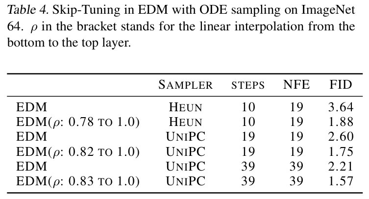
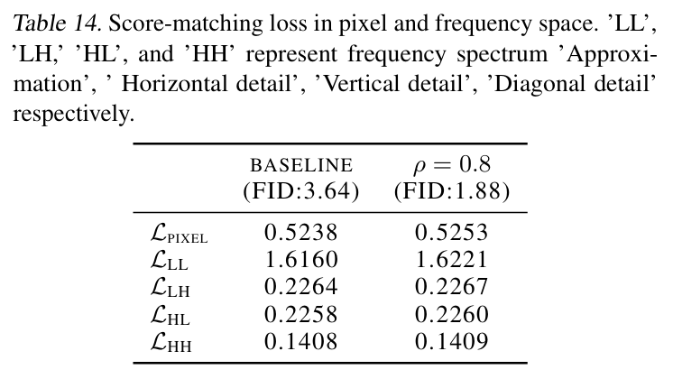

全文翻译
摘要
随着UNet架构的引入，扩散概率模型已成为图像生成任务中的主导力量。UNet的一个关键设计是编码器块和解码器块之间的跳跃连接。尽管跳跃连接已被证明可以提高训练稳定性和模型性能，但我们发现这种捷径可能成为变换复杂性的限制因素。随着采样步骤的减少，生成过程和UNet的作用更接近从高斯分布到目标分布的前推变换，这对网络的复杂性构成了挑战。为了解决这一挑战，我们提出了Skip-Tuning，这是一种简单但效果惊人的无训练调优方法，适用于跳跃连接。我们的方法仅使用19次函数评估（NFE），就可以使ImageNet 64上的预训练EDM的FID提高100%（达到1.75），打破了无论采样步骤如何的ODE采样器的限制。令人惊讶的是，当我们增加采样步骤时，这种改进仍然存在，甚至仅用39次NFE就能超过EDM-2的最佳结果（1.58 vs 1.57）。我们进行了全面的探索性实验，以揭示这种惊人效果的原因。我们观察到，虽然Skip-Tuning增加了像素空间的分数匹配损失，但特征空间的损失却减少了，尤其是在中间噪声水平下，这与图像质量改善的最有效范围一致。
1. 引言
在过去几年里，扩散概率模型（DPMs）（Sohl-Dickstein等人，2015；Ho等人，2020；Song等人，2020b）因其在生成建模，尤其是高分辨率图像生成中的成功而备受关注。DPMs的一个显著特点是训练和采样通常是解耦的。训练目标是噪声数据的多级分数函数，由去噪分数匹配中的UNet捕获。为了生成新样本，基于微分方程求解器开发了各种采样方法，通过选择采样步骤数，我们可以在效率和质量（离散化误差）之间进行权衡。这为分数网络的训练后修改留下了空间，可能显著改善扩散采样过程。许多工作致力于使用预训练的DPMs进行高效扩散采样，尽可能减少步骤，例如通过改进的微分方程求解器（Lu等人，2022；Zhao等人，2023；Xue等人，2023）、额外的蒸馏训练（Salimans & Ho，2022；Song等人，2023；Luo等人，2023）等。在这项工作中，我们通过研究网络架构，揭示了一个改善扩散采样的重要但被忽略的角度。
DPM的概念（Sohl-Dickstein等人，2015）早于其实证成功。尽管其数学公式优雅，但在采用UNet架构进行去噪分数匹配之前（Song & Ermon，2019；Ho等人，2020），实证性能一直不足。UNet中最独特的设计是编码器块和解码器块之间的跳跃连接，该设计最初是为图像分割提出的（Ronneberger等人，2015）。然而，许多工作此后证明了其在DPMs中的有效性，并且在经过各种架构修改后，这种跳跃设计仍然是主流。在试验Transformer架构时，（Bao等人，2023）进行了全面研究，发现长跳跃连接有助于扩散训练。然而，当涉及到少样本扩散采样时，这种跳跃连接可能不是理想的设计选择。随着采样步骤的减少，生成过程或UNet的作用更接近从高斯分布到目标分布的前推变换，这本质上与分数匹配的目标相矛盾。将与数据无关的高斯分布推向高度复杂和多模态的数据分布对网络的表达能力是一个巨大的挑战（Xiao等人，2018；Hu等人，2023）。从这个角度来看，跳跃连接，尤其是低级别的跳跃连接，可能是UNet容量的限制因素，因为它们提供了从编码器到解码器的捷径。
为了应对这一挑战，我们提出了Skip-Tuning，这是一种简单且无需训练的对残差连接强度的修改，以改善少步扩散采样。通过大量实验，我们发现Skip-Tuning不仅在少样本情况下显著提高了图像质量，而且对更多采样步骤普遍有帮助。令人惊讶的是，在ImageNet上使用EDM（Karras等人，2022）仅10次NFE，我们就打破了ODE采样器的限制，并且仅用39次NFE就击败了经过大量优化的EDM-2（Karras等人，2023）。我们的方法在各种不同架构的DPMs上具有良好的泛化性，例如LDM（Rombach等人，2022）和UViT（Bao等人，2023）。我们进行了全面的探索性实验，以阐明Skip-Tuning的惊人效果。我们发现，尽管原始去噪分数匹配损失随着Skip-Tuning而增加，但特征空间中的损失却减少了，尤其是对于中间噪声值（采样阶段）。这个有效范围与我们通过详尽窗口搜索确定的图像质量改善范围一致。我们还进行了基于特征空间分数匹配的微调实验，结果显示性能明显比Skip-Tuning差。除了FID，我们还使用其他生成质量指标进行了实验，例如Inception Score、Precision & Recall和最大均值差异（MMD）（Jayasumana等人，2023）。例如，对反转过程的研究表明，就各种核的MMD而言，Skip-Tuned UNet可以产生更接近高斯分布的反转噪声。
这项工作通过展示一种简单但非常有用的无训练调优方法来提高样本质量，有助于更好地理解扩散采样中UNet跳跃连接的作用。提出的Skip-Tuning与现有的扩散采样器正交，可以结合使用以充分释放DPMs的潜力。
2. 预备知识
扩散概率模型（DPMs）（Sohl-Dickstein 等人，2015；Ho 等人，2020；Song 等人，2020b；Kingma 等人，2021）通过以下随机微分方程（SDE）向数据添加噪声：
其中 $w_{t} \in \mathbb{R}^{D}$ 表示标准维纳过程。对于任意 $t \in[0, T]$，条件于 $x_{0}$ 的 $x_{t}$ 分布为高斯分布，即 $x_{t} | x_{0} \sim N(\alpha_{t} x_{0}, \sigma_{t}^{2} I)$。函数 $\alpha_{t}$ 和 $\sigma_{t}$ 的选择使得 $x_{T}$ 近似为零均值、单位协方差的高斯分布。Anderson（1982）证明前向过程（1）存在等价的反向时间扩散过程（从 $T$ 到 $0$）。因此，生成过程等价于求解扩散SDE（Song 等人，2020b）：
其中 $\overline{w}_{t}$ 表示反向时间的维纳过程，$\nabla_{x} \log q_{t}(x)$ 是分数函数。此外，Song 等人（2020b）还表明存在对应的确定性过程，其边际概率密度 $q_{t}(x)$ 与（2）相同：
我们通常训练一个由 $\theta$ 参数化的分数网络 $s_{\theta}(x, t)$，通过优化去噪分数匹配损失（Vincent，2011；Song 等人，2020b）来近似（2）中的分数函数 $\nabla_{x} \log q_{t}(x)$：
其中 $\omega_{t}$ 是加权函数。尽管扩散采样中引入随机性已被证明可实现更好的质量和多样性（Karras 等人，2022；Xue 等人，2023），但当采样步骤较少时，基于ODE的采样方法（Song 等人，2020a；Zhang & Chen，2022；Lu 等人，2022；Zhao 等人，2023）更为优越。
UNet 是一种基于卷积神经网络的架构，最初用于图像分割（Ronneberger 等人，2015），但最近在分数估计中取得了成功（Song & Ermon，2019；Ho 等人，2020）。UNet 由一组下采样块、一组上采样块以及两组之间的长跳跃连接组成。示意图见图1。在扩散模型的UNet架构中（Dhariwal & Nichol，2021），它包含16层从底部到顶部的连接，其中来自下采样组件的跳跃向量 $d$ 与相应的上采样向量 $u$ 连接。在这16层中，有10层的跳跃向量与相应上采样组件中的向量具有相同的通道数。在这项工作中，我们揭示了在采样过程中调整跳跃向量的大小所带来的显著改进，并对此进行了详细解释。
| UNet示意图 |
3. 用于扩散采样的Skip-Tuning
考虑单步映射直接从随机噪声生成图像的极端情况。尽管这种情况在扩散蒸馏场景中已被广泛研究（Salimans & Ho, 2022; Song等人, 2023; Luo等人, 2023），但仅通过纯采样方法而不进行额外训练时，性能远非最优。这种限制可能源于UNet架构的容量。在单步采样设置中，UNet的作用类似于生成对抗网络（GAN）的生成器（Goodfellow等人, 2014），进行前推生成。由于输入分布与数据无关，所需的变换复杂度可能极高，尤其是当目标分布为多模态或支撑在低维流形上时（Hu等人, 2023）。UNet中连接下采样和上采样组件的跳跃连接可能对前推变换有害。为了证明这一点，我们检查了每层中下采样跳跃向量d与上采样向量u之间的$l_2$范数比率，即：
图2比较了EDM、CD蒸馏EDM（Song等人, 2023）和DI蒸馏EDM（Luo等人, 2023）的逐层$prop_i$。我们发现，蒸馏后的UNet的编码器下采样组件的影响较小。具体而言，基础EDM模型的平均逐层$l_2$范数比率（即$\frac{1}{k}\sum_{i}^{k}(\frac{|d_{i}|_{2}}{|u_{i}|_{2}})$）为0.446，而DI蒸馏模型为0.433，CD蒸馏模型为0.404，这证实了我们的假设。
| 下采样跳跃与上采样向量的逐层$l_2$范数比例 |
此外，我们在表1中验证了ImageNet 64上蒸馏EDM网络（CD和DI）与原始EDM相比的整体模型复杂度增加。具体来说，我们选择模型梯度的$l_2$范数来反映公式3中EDM网络U的复杂度。
| EDM和蒸馏EDM（CD：一致性蒸馏，DI：Diff-Instruct）的梯度范数比较。由于两个蒸馏模型的初始sigma设置不同，因此σ值（噪声标准差）也不同。 |
受此观察启发，我们考虑以无训练的方式手动减少跳跃连接，以改善少样本扩散采样。
定义3.1（Skip-Tuning） 我们引入跳跃系数$\rho_i$来控制下采样输出$d_i$的相对强度。具体来说，我们在$d_i$和$u_i$的拼接中添加$\rho_i$，即拼接$(d_{i} \cdot \rho_{i}, u_{i})$。在这项工作中，我们仅考虑$\rho < 1$。
通过为预训练UNet适当选择$\rho$，我们可以模拟图2中观察到的近似递减的$l_2$范数比率。具体来说，我们采用底层和顶层的$\rho_{\text{bottom}}$和$\rho_{\text{top}}$的线性插值来匹配该模式（例如，将$\rho_{\text{bottom}}$设为0.5，并向$\rho_{\text{top}}$线性增加至1.0），即：
为了展示其有效性，我们在ImageNet 64上使用预训练的EDM（Karras等人, 2022）进行了实验。我们遵循（Karras等人, 2022）中的设置进行标准类条件生成，不使用额外的引导方法（Dhariwal & Nichol, 2021; Ho & Salimans, 2022; Ma等人, 2023b）。表2报告了使用Heun和UniPC（Zhao等人, 2023）的少步采样结果。使用少于10次NFE，我们的Skip-Tuning可以将FID提高约100%。
| EDM的Skip-Tuning少步采样结果。ρ表示从底层到顶层的线性插值。 |
注3.2（超越现有架构） 跳跃系数$\rho$无法被吸收到现有模型参数中，因为输入在组归一化、SiLU激活函数和前向函数中的卷积函数中的位置所致。SiLU激活函数的非线性性使得无法在卷积函数中研究跳跃系数的值。
Skip-Tuning以无训练的方式为预训练扩散模型提供了额外的灵活性。除了在少样本扩散采样中的惊人效果外，我们还测试了其在蒸馏UNet单步生成中的性能。在表3中，我们可以观察到相对于基线的显著改进。值得注意的是，由于蒸馏过程中隐式减少了跳跃连接，蒸馏UNet的理想$\rho$接近1.0（CD：0.91；DI：0.98），如图2中蒸馏模型的较低跳跃范数比例所证实。
| 蒸馏EDM（CD：一致性蒸馏，DI：Diff-Instruct）的Skip-Tuning结果。：原始论文中报告的结果。†：在我们的复现中，为了更好的兼容性，我们将flash attention替换为标准注意力。* |
在图3中，我们展示了通过在跳跃拼接中减小下采样向量d（$\rho < 1$），EDM网络U的复杂度单调增加，其中模型复杂度通过公式3估计。
| 随着跳跃系数ρ变化的梯度$l_2$范数 |
4. 打破ODE采样限制
我们提出的Skip-Tuning在改善少步扩散采样方面已展现出惊人的效果。随之而来的一个自然问题是：如果增加采样步骤，这种改进是否仍然显著？当前的采样方法大多基于ODE求解器，这些求解器根据特定方案对扩散ODE进行离散化。随着采样步骤的增加，离散化误差趋近于零，FID分数也会饱和至一个极限值。
注4.1：目前大多数蒸馏方法（如渐进式蒸馏（Salimans & Ho, 2022）、一致性模型（Song等人, 2023））学习从噪声到数据的ODE轨迹映射，该轨迹通过教师模型的ODE采样极限进行模拟。
在本节中，我们进一步测试Skip-Tuning的极限，以了解其与最先进的DPM（如EDM（Karras等人, 2022）、EDM-2（Karras等人, 2023）、LDM（Rombach等人, 2022）、UViT（Bao等人, 2023））相比的表现。
我们首先从ImageNet上的EDM开始实验，现有文献表明任何ODE采样器无论采用多少采样步骤，其FID都无法低于2.2（Karras等人, 2022）。令人惊讶的是，如表4所示，我们的Skip-Tuning EDM仅用19次NFE就超越了之前的ODE采样极限（FID：1.75）。此外，通过将采样步骤增加到39次NFE（表5），我们在原始EDM上应用Skip-Tuning（FID：1.57）甚至可以击败经过大量优化的EDM-2（Karras等人, 2023）（FID：1.58）。从AFHQv2（Choi等人, 2020；Karras等人, 2021）64×64的采样结果（表6）中也可以得出类似结论。
|  |
|---|
| ImageNet 64上EDM的ODE采样Skip-Tuning结果。括号中的ρ表示从底层到顶层的线性插值。 |
| AFHQv2 64×64上EDM的ODE采样Skip-Tuning结果。 |
为了证明Skip-Tuning在提升采样性能方面的稳定性，我们在不同UniPC采样步骤下对不同跳跃系数ρ进行了实验，结果如图4所示。在不同NFE下，FID曲线均呈现U型模式。对于NFE=9，U型FID曲线的跳跃系数“最佳点”介于0.65到0.70之间。这可归因于少步设置中对网络复杂度需求的增加。对于NFE=39（此时已很好地收敛，因为ρ=1时的基线FID为2.21，与511次NFE的Heun采样结果（Karras等人, 2022）一致），ρ的最佳点约为0.85。我们将这些发现总结如下：
- 在固定跳跃系数的情况下，FID分数随采样步骤的增加而单调改善。
- 对于给定的采样步骤，存在一个最优的跳跃系数范围。
- 随着采样步骤的增加，最优跳跃系数范围单调增加并趋近于一个小于1的极限值。
| 不同跳跃系数和步数的ODE UniPC采样结果 |
除了EDM之外，我们的Skip-Tuning还可以改善其他包含跳跃连接设计的DPM，包括LDM（Rombach等人, 2022）和UViT（Bao等人, 2023），如表7所示。
| 256x256 ImageNet上LDM和UViT的Skip-Tuning结果。 |
除了定量指标的显著改善外，图5和图6从视觉上展示了Skip-Tuning对物体和语义丰富度的贡献。例如，在图5中，经过Skip-Tuning处理后的花卉图像（第一行右侧）装饰有叶状细节和耀眼的黄色。
| 左侧64x64图像采用ODE 10步采样（FID：3.64）；右侧图像采用Skip-Tuning $\rho=0.78$的ODE 10步采样（FID：1.88） |
| 左侧256x256图像采用LDM 10步采样（FID：4.91）；右侧图像采用Skip-Tuning $\rho=0.78$的LDM 10步采样（FID：4.67） |
5. 揭秘Skip-Tuning
在本节中，我们深入探讨Skip-Tuning如何影响扩散模型的采样过程。如前所述，DPM的训练和采样是解耦的。既然Skip-Tuning能在训练后显著提升采样效果，首先需要探究的问题是它对DPM训练损失的影响。
5.1 去噪分数匹配
考虑如下去噪分数匹配损失：
表8对比了原始EDM及其Skip-Tuning版本（$\rho=0.8$）的分数匹配损失。第一行结果显示，Skip-Tuning使像素空间的分数匹配损失变差。这在意料之中，因为基线EDM模型是在该像素损失$\mathcal{L}_{pixel}$下优化的。但为什么验证损失更高时，生成质量却能显著提升（FID从3.64提升至1.88）？事实证明，Skip-Tuning虽然增加了原始像素空间的损失，却能降低各种判别模型$f$特征空间的去噪分数匹配损失，如下所示：
表8列出了在Inception-V3（Szegedy等人，2016）、ResNet-101（He等人，2016）（在ImageNet上训练，输出维度2048）和CLIP-ViT（Radford等人，2021）图像编码器（在网络爬取的图像-文本对和公共数据集上训练，输出维度1024）特征空间中的损失。在Skip-Tuning设置下，分类器和CLIP编码器特征空间的分数匹配损失均下降，表明在判别模型特征空间中分数匹配估计得到了改善。
| EDM在像素、判别特征和CLIP图像编码器空间的分数匹配损失。 |
表9进一步比较了不同采样$\sigma$水平下ResNet101输出空间的分数匹配损失（$\mathcal{L}_{ResNet-101}$）。结果表明，Skip-Tuning在特征空间分数匹配上的改善并非在所有时间点均匀分布（(a)），而是在中间噪声值（采样阶段）尤为明显。这一观察为下一节探索时间依赖的Skip-Tuning提供了动机。
5.2 噪声水平依赖性
在探索Skip-Tuning的时间依赖特性时，我们旨在确定扩散采样中哪个时间区间能带来最大的FID改善。为此，我们进行了详尽的窗口搜索：将sigma区间[0.002, 80]划分为13个不重叠的子区间，每个子区间仅包含4步采样过程，在每个子区间内单独应用Skip-Tuning，区间外则使用原始模型。图7的搜索结果显示，在sigma范围的中间阶段应用Skip-Tuning对采样性能的提升最为显著。这与表9中观察到的Skip-Tuning在中间sigma阶段ResNet101特征空间损失（$\mathcal{L}_{ResNet-101}$）更低的结果一致。
| 基线EDM和Skip-Tuning EDM在ResNet101特征空间（$L_{ResNet-101}$）的分数匹配损失比较。σ值选自ODE采样的5个步骤。 |
| EDM Sigma（噪声信号比）的Skip区间穷举窗口搜索结果 |
此外，我们进一步验证了不同扩散模型因其训练目标不同，对Skip-Tuning的时间调度偏好也不同。附录A中的图11展示了采样时间上两种相反的$\rho$线性插值方式：“increasing $\rho$”表示$\rho$从时间0的$\rho_{0}$线性增加到时间T的1.0；“decreasing $\rho$”表示$\rho$从时间0的1.0线性减少到时间T的$\rho_{0}$。这一研究的逻辑在于：不同时间步的分数网络所需复杂度不同——对于LDM等噪声预测模型，噪声水平$\sigma$越高任务越简单；而对于EDM等数据预测模型则相反。由于降低$\rho$会增加网络复杂度，理想的$\rho$调度也应相反。
| 跳跃系数ρ的时间依赖性线性插值 |
表10比较了不同时间依赖的$\rho$顺序对采样性能的影响：EDM模型偏好“decreasing $\rho$”顺序，即在时间T使用较小的跳跃系数（减少噪声传递），在时间0使用较大的跳跃系数（生成更清晰的图像）；而LDM和UViT模型则偏好“increasing $\rho$”顺序，表明对时间依赖的跳跃系数有相反的偏好。
| EDM、LDM和UViT之间ρ的时间依赖性顺序比较。递增ρ表示ρ在时间0到T期间从ρ₀线性增加到1.0，而递减ρ表示ρ在时间0到T期间从1.0线性减少到ρ₀。 |
5.3 Skip-Tuning vs 微调
在揭示Skip-Tuning能改善判别特征空间的分数匹配后，一个自然的问题是：能否通过基于特征空间分数匹配损失对扩散模型进行微调来达到相同的改善效果？为此，我们进行了两组实验：仅微调跳跃系数$\rho$，以及使用所有模型参数进行全微调。令人惊讶的是，这两种直接微调方式均导致采样性能下降，且无法匹配Skip-Tuning的质量和无训练特性。
微调$\rho$ 表11列出了使用ResNet101特征空间分数匹配损失微调$\rho$后的采样结果。直接微调$\rho$会导致部分跳跃系数大于1，在采样过程中引入过多噪声，导致性能显著下降。为消除$\rho>1$的可能，我们随后应用Sigmoid函数将$\rho$约束在(0,1)区间，结果虽显著改善，但仍不如直接使用Skip-Tuning。
| 使用ResNet101输出空间的分数匹配损失对EDM跳跃系数ρ进行微调的结果。采样图像为ImageNet 64x64。 |
全微调 表12展示了使用原始分数匹配和特征空间分数匹配的混合损失对EDM模型所有网络参数进行微调的结果。初始阶段性能略有提升，但随着训练进行性能恶化。同样，微调无法匹配Skip-Tuning的质量和稳定性。
| 使用Inception-V3建模分数匹配损失对EDM进行微调的结果。 |
本节的对比表明，改善特征空间的分数匹配损失只是Skip-Tuning有效性的一个方面，其效果无法通过简单的微调来复现。在下一部分，我们将探讨Skip-Tuning如何影响扩散采样的逆过程。
5.4 逆过程
从时间0到时间T模拟扩散ODE，我们将数据逆转为（近似）高斯噪声。这引发了一个问题：Skip-Tuning能否改善逆过程的结果？我们使用最大均值差异（MMD）作为指标，评估逆（伪）高斯噪声与真实高斯分布之间的距离（MMD细节见附录B）。具体来说，我们对10k张图像进行逆处理得到10k噪声，并计算生成噪声与真实噪声之间的MMD距离。实验重复多次，结果取平均（表13）。对于每个核，我们将基线结果归一化为1。
| 相对MMD距离比较。 |
结果表明，在大多数核下，Skip-Tuning减少了逆噪声与标准高斯噪声之间的差异，与生成过程一致。
|  |
|---|
| 像素和频率空间的分数匹配损失。’LL’、’LH’、’HL’和’HH’分别代表频谱的’近似值’、’水平细节’、’垂直细节’、’对角线细节’。 |
5.5 与随机采样的关系
随机采样可视为扩散ODE和朗之万扩散的插值，形式如下：
随机采样通过在采样过程中注入额外噪声，可超越ODE采样极限（Song等人, 2020b；Karras等人, 2022；Xue等人, 2023）。Karras等人（2022）指出，随机采样中隐式的朗之万扩散会将样本推向目标边际分布，纠正早期采样步骤的误差。Xue等人（2023）通过KL散度不等式证明了随机采样的优越性。
然而，随机采样中的随机强度$\tau(t)$会影响采样效果。Karras等人（2022）在ImageNet-64数据集上的实证结果显示：随机采样可将基线模型的FID从2.66提升至1.55，EDM模型从2.22提升至1.36。他们还观察到EDM模型的最优随机强度远低于基线模型。我们额外进行了实验，探索跳跃系数与随机采样的结合效果。图8显示，随着跳跃系数降低，随机强度的最佳点也随之降低。我们发现，轻微的Skip-Tuning（如$\rho=0.95$对比$\rho=1$）可在所有随机强度下改善随机采样效果。
| 跳跃调整与随机采样的结合 |
| 其他评估指标。 |
7. 讨论
我们提出的Skip-Tuning打破了ODE采样的限制，既提升了现有UNet扩散模型（教师模型）的生成质量，也增强了蒸馏扩散模型（学生模型）的单步采样效果。通过大量研究，我们将Skip-Tuning的成功归因于判别特征空间中分数匹配的改善，以及逆噪声与真实高斯噪声之间的差异减小。这些发现不仅加深了我们对UNet架构的理解，还证明了Skip-Tuning作为一种训练后方法，能显著提升扩散生成质量。
若能在更广泛的范围内探索跳跃连接，例如不同模态的模型或DiT等无手动设计长距离跳跃连接的新架构，本研究的结论将更具普适性。
附录
A. 其他细节
| 跳跃向量与上采样组件的范数比例。跳跃向量与上采样权重的范数比例 |
| 图像的小波变换。’LL’、’LH’、’HL’和’HH’分别代表频谱的’近似值’、’水平细节’、’垂直细节’、’对角线细节’ |
B. 关于最大均值差异（MMD）的详细说明
最大均值差异（MMD）（Gretton 等人，2006；2012）是一种基于核的统计检验方法，用作双样本检验以确定两个样本是否来自同一分布。MMD统计量可被视为两个分布之间的差异。给定分布P和Q，一个特征映射ϕ将P和Q映射到特征空间F。记核函数$k(x, y)=<\phi(x), \phi(y)>_{F}$，关于正定核k的MMD距离定义为：
在实践中，我们仅有两个从P和Q独立采样得到的经验分布$\hat{P}=\sum_{i=1}^{m} \delta(x_{i})$和$\hat{Q}=\sum_{i=1}^{n} \delta(y_{i})$，此时MMD距离的无偏经验估计量如下：
C. UNet模块中组归一化的详细说明
组归一化（Wu & He，2018）是一种归一化层，它将通道划分为多个组，并对每个组内的特征进行归一化。一个自然的问题是，在组归一化层的影响下，Skip-Tuning会产生什么效果？UNetBlock的输入是跳跃连接的下采样部分和上采样部分的线性缩放特征的拼接。在线性缩放后，除了最多一个例外组，其余部分的缩放效果会在UNetBlock的第一个组归一化层之后消失。然而，内部跳跃连接x = x.add_(self.skip(orig) if self.skip is not None else orig) 保留了Skip-Tuning的信息。
我们进行了一项实验，以验证所提出的Skip-Tuning大致相当于仅改变orig变量的缩放比例。具体来说，我们保持UNetBlock的输入不变，仅对orig变量的对应通道乘以缩放因子。我们采用了表5中的设置，该设置在39次NFE下实现了1.57的FID分数。相比之下，我们没有观察到性能下降：仅改变orig变量的缩放比例会产生1.58的FID分数。
| ImageNet 64上的ODE采样极限。基线和Skip-Tuning的EDM检查点来自（Karras等人，2022）。EDM-2-S的结果来自（Karras等人，2023）。 |
我们还从另一个方向进行了实验，即仅改变self.norm(0)变量的缩放比例，并保持orig变量不变。令人惊讶的是，我们也没有观察到性能下降：仅改变self.norm(0)变量的缩放比例会产生1.57的FID分数。
备注C.1. FreeU（Si等人，2023）在主干特征上添加了一个膨胀系数（>1）。组归一化层对FreeU的影响是类似的。因此我们推测膨胀系数也作用于orig变量。从这个角度来看，Skip-Tuning和FreeU的操作是不同的。